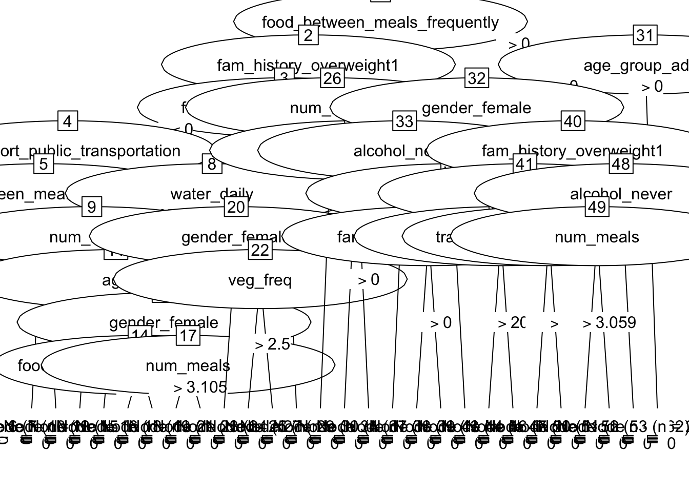

6 Decision Tree (DT)
6.1 Introduction
Decision trees are tree-based models that excel at classification tasks. In contrast, regression trees are effective for continuous outcome predictions rather than distinct classes.
Decision trees structure their decisions based on given features using a tree with one trunk and multiple nodes. Starting from the root node, the tree branches out and makes decisions throughout each step, ultimately outputting predictions at leaves.
Decision trees can easily handle both categorical and numerical data, but they have a tendency to overfit training data, necessitating potential pruning and adjustments. This is why RF or XGB might sometimes yield better results while preventing overfitting.
In our case, decision trees can prove effective for solving our binary classification problem. In this module, we will utilize two models: a basic DT and a DT with a cost-considering cost structure.
6.2 Load Data
# Load data
train_dt <- read.csv('Train Test Set/train_dt.csv')
test_dt <- read.csv('Train Test Set/test_dt.csv')
# Display statistics
str(train_dt)## 'data.frame': 10379 obs. of 27 variables:
## $ gender_female : int 1 1 1 0 1 1 1 0 1 1 ...
## $ gender_male : int 0 0 0 1 0 0 0 1 0 0 ...
## $ age : int 24 34 19 19 25 26 23 27 26 20 ...
## $ fam_history_overweight1 : int 1 1 1 1 1 1 1 1 1 0 ...
## $ freq_consumption_hc_food1 : int 1 1 1 1 1 1 0 1 1 0 ...
## $ veg_freq : num 3 2.1 3 3 3 ...
## $ num_meals : num 3 2.98 3 3 3 ...
## $ food_between_meals_frequently : int 0 0 0 0 0 0 0 0 0 1 ...
## $ food_between_meals_never : int 0 0 0 0 0 0 0 0 0 0 ...
## $ food_between_meals_sometimes : int 1 1 1 0 1 1 1 1 1 0 ...
## $ smoke1 : int 0 0 0 0 0 0 0 0 0 0 ...
## $ water_daily : num 2.47 1.96 2.87 3 2.86 ...
## $ caloric_beverages1 : int 0 0 0 1 0 0 0 0 0 0 ...
## $ activity_freq : num 0.167 0.988 1.465 3 0.265 ...
## $ tech_use : num 0.487 0 0.656 0 0.673 ...
## $ alcohol_never : int 0 0 0 0 0 0 0 0 0 0 ...
## $ alcohol_sometimes : int 1 1 1 1 1 1 1 1 1 1 ...
## $ transport_bike : int 0 0 0 0 0 0 0 0 0 0 ...
## $ transport_motorbike : int 0 0 0 0 0 0 0 0 0 0 ...
## $ transport_public_transportation: int 1 0 1 1 1 1 1 1 1 1 ...
## $ transport_walking : int 0 0 0 0 0 0 0 0 0 0 ...
## $ obesity_leveloverweight : int 1 1 1 1 1 1 1 1 1 0 ...
## $ eating_habit_binary : num 2.67 2.36 2.67 2.67 2.67 ...
## $ physical_activity_binary : num -0.32 0.988 0.809 3 -0.408 ...
## $ age_group_young_adult : int 1 1 1 1 1 1 1 1 1 1 ...
## $ age_group_adult : int 0 0 0 0 0 0 0 0 0 0 ...
## $ age_group_senior : int 0 0 0 0 0 0 0 0 0 0 ...## gender_female gender_male age fam_history_overweight1
## Min. :0.0000 Min. :0.0000 Min. :14.00 Min. :0.0000
## 1st Qu.:0.0000 1st Qu.:0.0000 1st Qu.:20.00 1st Qu.:1.0000
## Median :1.0000 Median :0.0000 Median :23.00 Median :1.0000
## Mean :0.5079 Mean :0.4921 Mean :23.81 Mean :0.8177
## 3rd Qu.:1.0000 3rd Qu.:1.0000 3rd Qu.:26.00 3rd Qu.:1.0000
## Max. :1.0000 Max. :1.0000 Max. :61.00 Max. :1.0000
## freq_consumption_hc_food1 veg_freq num_meals
## Min. :0.0000 Min. :1.000 Min. :1.000
## 1st Qu.:1.0000 1st Qu.:2.000 1st Qu.:3.000
## Median :1.0000 Median :2.445 Median :3.000
## Mean :0.9166 Mean :2.452 Mean :2.758
## 3rd Qu.:1.0000 3rd Qu.:3.000 3rd Qu.:3.000
## Max. :1.0000 Max. :3.000 Max. :4.000
## food_between_meals_frequently food_between_meals_never
## Min. :0.0000 Min. :0.00000
## 1st Qu.:0.0000 1st Qu.:0.00000
## Median :0.0000 Median :0.00000
## Mean :0.1212 Mean :0.01253
## 3rd Qu.:0.0000 3rd Qu.:0.00000
## Max. :1.0000 Max. :1.00000
## food_between_meals_sometimes smoke1 water_daily
## Min. :0.0000 Min. :0.00000 Min. :1.000
## 1st Qu.:1.0000 1st Qu.:0.00000 1st Qu.:1.796
## Median :1.0000 Median :0.00000 Median :2.000
## Mean :0.8446 Mean :0.01224 Mean :2.029
## 3rd Qu.:1.0000 3rd Qu.:0.00000 3rd Qu.:2.536
## Max. :1.0000 Max. :1.00000 Max. :3.000
## caloric_beverages1 activity_freq tech_use alcohol_never
## Min. :0.00000 Min. :0.00000 Min. :0.0000 Min. :0.0000
## 1st Qu.:0.00000 1st Qu.:0.00705 1st Qu.:0.0000 1st Qu.:0.0000
## Median :0.00000 Median :1.00000 Median :0.5740 Median :0.0000
## Mean :0.03276 Mean :0.98097 Mean :0.6147 Mean :0.2461
## 3rd Qu.:0.00000 3rd Qu.:1.58652 3rd Qu.:1.0000 3rd Qu.:0.0000
## Max. :1.00000 Max. :3.00000 Max. :2.0000 Max. :1.0000
## alcohol_sometimes transport_bike transport_motorbike
## Min. :0.0000 Min. :0.000000 Min. :0.000000
## 1st Qu.:0.0000 1st Qu.:0.000000 1st Qu.:0.000000
## Median :1.0000 Median :0.000000 Median :0.000000
## Mean :0.7289 Mean :0.001734 Mean :0.001927
## 3rd Qu.:1.0000 3rd Qu.:0.000000 3rd Qu.:0.000000
## Max. :1.0000 Max. :1.000000 Max. :1.000000
## transport_public_transportation transport_walking obesity_leveloverweight
## Min. :0.0000 Min. :0.00000 Min. :0.0000
## 1st Qu.:1.0000 1st Qu.:0.00000 1st Qu.:0.0000
## Median :1.0000 Median :0.00000 Median :1.0000
## Mean :0.8056 Mean :0.02226 Mean :0.7262
## 3rd Qu.:1.0000 3rd Qu.:0.00000 3rd Qu.:1.0000
## Max. :1.0000 Max. :1.00000 Max. :1.0000
## eating_habit_binary physical_activity_binary age_group_young_adult
## Min. :1.000 Min. :-2.0000 Min. :0.0000
## 1st Qu.:2.309 1st Qu.:-0.2790 1st Qu.:1.0000
## Median :2.333 Median : 0.2867 Median :1.0000
## Mean :2.375 Mean : 0.3662 Mean :0.9019
## 3rd Qu.:2.667 3rd Qu.: 1.0000 3rd Qu.:1.0000
## Max. :3.000 Max. : 3.0000 Max. :1.0000
## age_group_adult age_group_senior
## Min. :0.00000 Min. :0.000000
## 1st Qu.:0.00000 1st Qu.:0.000000
## Median :0.00000 Median :0.000000
## Mean :0.05222 Mean :0.003276
## 3rd Qu.:0.00000 3rd Qu.:0.000000
## Max. :1.00000 Max. :1.000000## gender_female gender_male age fam_history_overweight1
## 1 1 0 24 1
## 2 1 0 34 1
## 3 1 0 19 1
## 4 0 1 19 1
## 5 1 0 25 1
## 6 1 0 26 1
## freq_consumption_hc_food1 veg_freq num_meals food_between_meals_frequently
## 1 1 3.000000 3.000000 0
## 2 1 2.103335 2.977909 0
## 3 1 3.000000 3.000000 0
## 4 1 3.000000 3.000000 0
## 5 1 3.000000 3.000000 0
## 6 1 3.000000 3.000000 0
## food_between_meals_never food_between_meals_sometimes smoke1 water_daily
## 1 0 1 0 2.472903
## 2 0 1 0 1.964435
## 3 0 1 0 2.865590
## 4 0 0 0 3.000000
## 5 0 1 0 2.863513
## 6 0 1 0 1.347559
## caloric_beverages1 activity_freq tech_use alcohol_never alcohol_sometimes
## 1 0 0.167086 0.486868 0 1
## 2 0 0.987521 0.000000 0 1
## 3 0 1.464674 0.655571 0 1
## 4 1 3.000000 0.000000 0 1
## 5 0 0.264831 0.673210 0 1
## 6 0 0.217455 0.625350 0 1
## transport_bike transport_motorbike transport_public_transportation
## 1 0 0 1
## 2 0 0 0
## 3 0 0 1
## 4 0 0 1
## 5 0 0 1
## 6 0 0 1
## transport_walking obesity_leveloverweight eating_habit_binary
## 1 0 1 2.666667
## 2 0 1 2.360415
## 3 0 1 2.666667
## 4 0 1 2.666667
## 5 0 1 2.666667
## 6 0 1 2.666667
## physical_activity_binary age_group_young_adult age_group_adult
## 1 -0.319782 1 0
## 2 0.987521 1 0
## 3 0.809103 1 0
## 4 3.000000 1 0
## 5 -0.408379 1 0
## 6 -0.407895 1 0
## age_group_senior
## 1 0
## 2 0
## 3 0
## 4 0
## 5 0
## 6 06.3 Model DT
6.3.1 Simple DT
First, let’s construct a DT model without considering the misclassification error cost.
##
## Call:
## C5.0.formula(formula = as.factor(obesity_leveloverweight) ~ ., data = train_dt)
##
##
## C5.0 [Release 2.07 GPL Edition] Wed Apr 17 20:31:24 2024
## -------------------------------
##
## Class specified by attribute `outcome'
##
## Read 10379 cases (27 attributes) from undefined.data
##
## Decision tree:
##
## fam_history_overweight1 <= 0:
## :...age_group_adult > 0: 1 (33/2)
## : age_group_adult <= 0:
## : :...food_between_meals_never > 0:
## : :...alcohol_never <= 0: 1 (68/8)
## : : alcohol_never > 0: 0 (9/2)
## : food_between_meals_never <= 0:
## : :...age > 26:
## : :...transport_public_transportation <= 0: 1 (61/12)
## : : transport_public_transportation > 0: 0 (13/5)
## : age <= 26:
## : :...water_daily > 2.987718:
## : :...eating_habit_binary <= 1.832259: 1 (14/1)
## : : eating_habit_binary > 1.832259:
## : : :...gender_female <= 0: 1 (77/27)
## : : gender_female > 0: 0 (32/9)
## : water_daily <= 2.987718:
## : :...food_between_meals_sometimes <= 0: 0 (626/39)
## : food_between_meals_sometimes > 0:
## : :...num_meals <= 2.986637:
## : :...veg_freq > 2.549782: 0 (73/15)
## : : veg_freq <= 2.549782:
## : : :...caloric_beverages1 > 0: 1 (11/1)
## : : caloric_beverages1 <= 0:
## : : :...activity_freq > 0.010183: 1 (67/26)
## : : activity_freq <= 0.010183:
## : : :...tech_use <= 1.58483: 0 (25/4)
## : : tech_use > 1.58483: 1 (3)
## : num_meals > 2.986637:
## : :...transport_public_transportation > 0: 0 (694/118)
## : transport_public_transportation <= 0:
## : :...freq_consumption_hc_food1 <= 0: 0 (14/1)
## : freq_consumption_hc_food1 > 0:
## : :...water_daily <= 1.49681: 0 (18/3)
## : water_daily > 1.49681:
## : :...veg_freq <= 2.104772: 1 (27/7)
## : veg_freq > 2.104772: 0 (27/7)
## fam_history_overweight1 > 0:
## :...food_between_meals_frequently > 0:
## :...age > 32: 1 (26/1)
## : age <= 32:
## : :...alcohol_never > 0: 0 (270/34)
## : alcohol_never <= 0:
## : :...alcohol_sometimes <= 0: 1 (49/8)
## : alcohol_sometimes > 0:
## : :...gender_female > 0: 0 (132/29)
## : gender_female <= 0:
## : :...veg_freq <= 2.291846: 0 (115/40)
## : veg_freq > 2.291846: 1 (56/24)
## food_between_meals_frequently <= 0:
## :...num_meals > 3.259033:
## :...age <= 18: 0 (92/11)
## : age > 18:
## : :...num_meals <= 3.998766: 1 (80/14)
## : num_meals > 3.998766: 0 (33/4)
## num_meals <= 3.259033:
## :...food_between_meals_sometimes <= 0:
## :...water_daily > 2.01897: 1 (51/7)
## : water_daily <= 2.01897:
## : :...eating_habit_binary <= 1.846881: 1 (28/6)
## : eating_habit_binary > 1.846881:
## : :...transport_public_transportation <= 0: 1 (23/9)
## : transport_public_transportation > 0: 0 (98/28)
## food_between_meals_sometimes > 0:
## :...age > 23: 1 (3860/63)
## age <= 23:
## :...transport_public_transportation <= 0:
## :...water_daily > 2.987718: 1 (48/10)
## : water_daily <= 2.987718:
## : :...freq_consumption_hc_food1 <= 0: 1 (19/8)
## : freq_consumption_hc_food1 > 0:
## : :...age <= 20: 0 (100/24)
## : age > 20:
## : :...caloric_beverages1 > 0: 1 (4)
## : caloric_beverages1 <= 0:
## : :...tech_use <= 1.229474: 0 (46/17)
## : tech_use > 1.229474: 1 (7)
## transport_public_transportation > 0:
## :...water_daily > 2.045561: 1 (1271/60)
## water_daily <= 2.045561:
## :...num_meals <= 2.997414: 1 (715/48)
## num_meals > 2.997414:
## :...age <= 19:
## :...eating_habit_binary <= 2.616983: 1 (369/169)
## : eating_habit_binary > 2.616983: 0 (119/32)
## age > 19:
## :...water_daily <= 1.999278:
## :...water_daily > 1: 1 (290/4)
## : water_daily <= 1:
## : :...activity_freq > 1.958694: 0 (19/4)
## : activity_freq <= 1.958694: [S1]
## water_daily > 1.999278:
## :...veg_freq > 2.997951:
## :...gender_female > 0: 0 (51/8)
## : gender_female <= 0:
## : :...alcohol_never <= 0: 1 (35/14)
## : alcohol_never > 0: 0 (8/2)
## veg_freq <= 2.997951:
## :...freq_consumption_hc_food1 <= 0:
## :...tech_use > 1.140348: 1 (6)
## : tech_use <= 1.140348:
## : :...activity_freq <= 0.497373: 0 (9)
## : activity_freq > 0.497373: 1 (32/14)
## freq_consumption_hc_food1 > 0:
## :...gender_female <= 0: 1 (257/49)
## gender_female > 0: [S2]
##
## SubTree [S1]
##
## physical_activity_binary <= -1.50301: 0 (9/3)
## physical_activity_binary > -1.50301: 1 (73/24)
##
## SubTree [S2]
##
## eating_habit_binary > 2.344948: 1 (9)
## eating_habit_binary <= 2.344948:
## :...veg_freq <= 1.99953: 1 (11/1)
## veg_freq > 1.99953:
## :...alcohol_sometimes <= 0: 1 (34/11)
## alcohol_sometimes > 0:
## :...activity_freq <= 1.28775: 0 (26/7)
## activity_freq > 1.28775: 1 (7/2)
##
##
## Evaluation on training data (10379 cases):
##
## Decision Tree
## ----------------
## Size Errors
##
## 59 1076(10.4%) <<
##
##
## (a) (b) <-classified as
## ---- ----
## 2212 630 (a): class 0
## 446 7091 (b): class 1
##
##
## Attribute usage:
##
## 100.00% fam_history_overweight1
## 97.01% age
## 88.82% food_between_meals_sometimes
## 84.77% num_meals
## 81.77% food_between_meals_frequently
## 52.82% water_daily
## 43.83% transport_public_transportation
## 18.23% age_group_adult
## 17.91% food_between_meals_never
## 8.57% veg_freq
## 8.19% gender_female
## 8.16% eating_habit_binary
## 7.15% alcohol_never
## 6.29% freq_consumption_hc_food1
## 4.04% alcohol_sometimes
## 2.60% activity_freq
## 1.57% caloric_beverages1
## 1.23% tech_use
## 0.79% physical_activity_binary
##
##
## Time: 0.1 secs## Overall
## fam_history_overweight1 100.00
## age 97.01
## food_between_meals_sometimes 88.82
## num_meals 84.77
## food_between_meals_frequently 81.77
## water_daily 52.82
## transport_public_transportation 43.83
## age_group_adult 18.23
## food_between_meals_never 17.91
## veg_freq 8.57
## gender_female 8.19
## eating_habit_binary 8.16
## alcohol_never 7.15
## freq_consumption_hc_food1 6.29
## alcohol_sometimes 4.04
## activity_freq 2.60
## caloric_beverages1 1.57
## tech_use 1.23
## physical_activity_binary 0.79
## gender_male 0.00
## smoke1 0.00
## transport_bike 0.00
## transport_motorbike 0.00
## transport_walking 0.00
## age_group_young_adult 0.00
## age_group_senior 0.00According to the variable importance chart, fam_history_overweight is identified as one of the most significant features for making decisions. This makes intuitive sense since family who are overweight tend to have children who are also overweight. Age, on the other hand, exhibits an intriguing aspect as it ranks second in importance. We suspect that older individuals may be more prone to obesity due to slower metabolism.
6.3.2 DT with Cost Matrix
Now, we will introduce a cost matrix where misclassifying an individual as not obese when they are actually obese incurs significant business costs. Conversely, incorrectly labeling someone as obese but discovering they are healthy carries less financial consequence.
# Build cost matrix
cost_matrix_dt <- matrix(c(0, 5, 1, 0), nrow = 2, byrow = TRUE,
dimnames = list(Actual = c('0', '1'),
Predicted = c('0', '1')))
# Build a model
model_dt_cost <- C5.0(
as.factor(obesity_leveloverweight) ~ .,
data = train_dt,
costs = cost_matrix_dt
)##
## Call:
## C5.0.formula(formula = as.factor(obesity_leveloverweight) ~ ., data =
## train_dt, costs = cost_matrix_dt)
##
##
## C5.0 [Release 2.07 GPL Edition] Wed Apr 17 20:31:26 2024
## -------------------------------
##
## Class specified by attribute `outcome'
##
## Read 10379 cases (27 attributes) from undefined.data
## Read misclassification costs from undefined.costs
##
## Decision tree:
##
## food_between_meals_frequently > 0:
## :...age_group_adult > 0: 1 (22/1)
## : age_group_adult <= 0:
## : :...gender_female <= 0:
## : :...alcohol_never <= 0: 1 (326/186)
## : : alcohol_never > 0:
## : : :...water_daily > 2.976229: 1 (20/9)
## : : water_daily <= 2.976229:
## : : :...fam_history_overweight1 <= 0: 0 (36/1)
## : : fam_history_overweight1 > 0: 1 (99/80)
## : gender_female > 0:
## : :...fam_history_overweight1 <= 0:
## : :...veg_freq <= 2.278644:
## : : :...age <= 20: 0 (95/3)
## : : : age > 20: 1 (33/24)
## : : veg_freq > 2.278644:
## : : :...transport_public_transportation <= 0: 1 (10/8)
## : : transport_public_transportation > 0: 0 (312/4)
## : fam_history_overweight1 > 0:
## : :...alcohol_never > 0: 0 (162/13)
## : alcohol_never <= 0:
## : :...num_meals <= 3.058539: 1 (118/82)
## : num_meals > 3.058539: 0 (25)
## food_between_meals_frequently <= 0:
## :...fam_history_overweight1 > 0:
## :...num_meals <= 3.998766: 1 (7752/906)
## : num_meals > 3.998766:
## : :...alcohol_never <= 0: 1 (34/26)
## : alcohol_never > 0: 0 (53/2)
## fam_history_overweight1 <= 0:
## :...food_between_meals_never > 0: 1 (78/15)
## food_between_meals_never <= 0:
## :...transport_public_transportation <= 0:
## :...food_between_meals_sometimes <= 0: 0 (19/1)
## : food_between_meals_sometimes > 0: 1 (194/78)
## transport_public_transportation > 0:
## :...water_daily > 2.975528:
## :...gender_female <= 0: 1 (58/17)
## : gender_female > 0:
## : :...veg_freq <= 2.499626: 1 (17/9)
## : veg_freq > 2.499626: 0 (8)
## water_daily <= 2.975528:
## :...num_meals <= 2.986637: 1 (171/100)
## num_meals > 2.986637:
## :...age <= 18: 0 (321/33)
## age > 18:
## :...gender_female <= 0:
## :...food_between_meals_sometimes <= 0: 0 (15/1)
## : food_between_meals_sometimes > 0: 1 (151/103)
## gender_female > 0:
## :...num_meals <= 3.105007: 1 (203/165)
## num_meals > 3.105007: 0 (47/2)
##
##
## Evaluation on training data (10379 cases):
##
## Decision Tree
## -----------------------
## Size Errors Cost
##
## 27 1869(18.0%) 0.20 <<
##
##
## (a) (b) <-classified as
## ---- ----
## 1033 1809 (a): class 0
## 60 7477 (b): class 1
##
##
## Attribute usage:
##
## 100.00% food_between_meals_frequently
## 96.45% fam_history_overweight1
## 85.65% num_meals
## 16.72% gender_female
## 14.70% transport_public_transportation
## 12.35% food_between_meals_never
## 12.12% age_group_adult
## 11.04% water_daily
## 8.41% alcohol_never
## 8.33% age
## 4.58% veg_freq
## 3.65% food_between_meals_sometimes
##
##
## Time: 0.0 secs
## Overall
## food_between_meals_frequently 100.00
## fam_history_overweight1 96.45
## num_meals 85.65
## gender_female 16.72
## transport_public_transportation 14.70
## food_between_meals_never 12.35
## age_group_adult 12.12
## water_daily 11.04
## alcohol_never 8.41
## age 8.33
## veg_freq 4.58
## food_between_meals_sometimes 3.65
## gender_male 0.00
## freq_consumption_hc_food1 0.00
## smoke1 0.00
## caloric_beverages1 0.00
## activity_freq 0.00
## tech_use 0.00
## alcohol_sometimes 0.00
## transport_bike 0.00
## transport_motorbike 0.00
## transport_walking 0.00
## eating_habit_binary 0.00
## physical_activity_binary 0.00
## age_group_young_adult 0.00
## age_group_senior 0.00With a cost matrix implemented, the variable importance chart now places a greater significance on food_between_meals_frequently as a top feature, along with fam_history_overweight and num_meals. These features, two of which are behavioral indicators, highlight the potential for someone overconsuming food that may contribute to becoming obese.
6.4 Evaluate DT
6.4.1 Simple DT
# Make a prediction
prediction_dt <- predict(model_dt, test_dt)
prediction_dt_prob <- predict(model_dt, test_dt, type="prob")
summary(prediction_dt)## 0 1
## 2590 7789# Perform confusion matrix
cm_dt <- confusionMatrix(
as.factor(prediction_dt),
as.factor(test_dt$obesity_leveloverweight),
positive = '1'
)
cm_dt## Confusion Matrix and Statistics
##
## Reference
## Prediction 0 1
## 0 1993 597
## 1 770 7019
##
## Accuracy : 0.8683
## 95% CI : (0.8616, 0.8747)
## No Information Rate : 0.7338
## P-Value [Acc > NIR] : < 2.2e-16
##
## Kappa : 0.656
##
## Mcnemar's Test P-Value : 3.287e-06
##
## Sensitivity : 0.9216
## Specificity : 0.7213
## Pos Pred Value : 0.9011
## Neg Pred Value : 0.7695
## Prevalence : 0.7338
## Detection Rate : 0.6763
## Detection Prevalence : 0.7505
## Balanced Accuracy : 0.8215
##
## 'Positive' Class : 1
## Based on the confusion matrix, we observe that the model achieves an accuracy of 0.8683, sensitivity of 0.9216, and a Kappa coefficient of 0.656. We will assess these results towards the conclusion of the assignment when we have completed stacked models.
# Plot AUC
pred <- ROCR::prediction(
prediction_dt_prob[,2],
test_dt$obesity_leveloverweight
)
perf <- ROCR::performance(pred, measure = "tpr", x.measure = "fpr")
auc <- ROCR::performance(pred, measure="auc")
auc <- round(auc@y.values[[1]],3)
roc.data <- data.frame(fpr=unlist(perf@x.values),
tpr=unlist(perf@y.values),
model="GLM")
ggplot(roc.data, aes(x=fpr, ymin=0, ymax=tpr)) +
geom_ribbon(alpha=0.2, fill = "blue") +
geom_line(aes(y=tpr), col = "blue") +
geom_abline(intercept = 0, slope = 1, lty = "dashed") +
labs(title = paste0("Simple Decision Tree ROC Curve w/ AUC=", auc)) +
theme_bw()6.4.2 DT with Cost Matrix
# Make a prediction
prediction_dt_cost <- predict(model_dt_cost, test_dt)
# Perform confusion matrix
cm_dt_cost <- confusionMatrix(
as.factor(prediction_dt_cost),
as.factor(test_dt$obesity_leveloverweight),
positive = '1'
)
cm_dt_cost## Confusion Matrix and Statistics
##
## Reference
## Prediction 0 1
## 0 880 90
## 1 1883 7526
##
## Accuracy : 0.8099
## 95% CI : (0.8022, 0.8174)
## No Information Rate : 0.7338
## P-Value [Acc > NIR] : < 2.2e-16
##
## Kappa : 0.3866
##
## Mcnemar's Test P-Value : < 2.2e-16
##
## Sensitivity : 0.9882
## Specificity : 0.3185
## Pos Pred Value : 0.7999
## Neg Pred Value : 0.9072
## Prevalence : 0.7338
## Detection Rate : 0.7251
## Detection Prevalence : 0.9065
## Balanced Accuracy : 0.6533
##
## 'Positive' Class : 1
## Based on the confusion matrix, we observe that the model achieves an accuracy of 0.8099, sensitivity of 0.9882, and a Kappa coefficient of 0.3866. We will assess these results towards the conclusion of the assignment when we have completed stacked models.